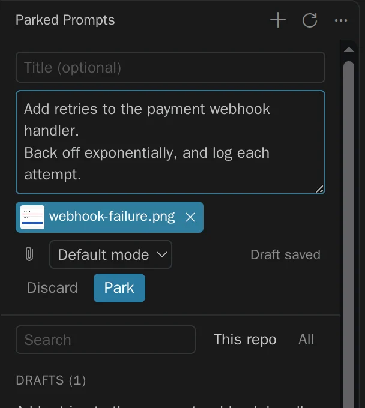

Docs
Everything about parking, restoring, and sharing prompts, in one page.
Install
The extension needs VS Code 1.105 or later. Install it from the Marketplace. Each button opens it in your editor, ready to install:
Or run:
code --install-extension vs-publisher-473885.parked-promptsOr download the .vsix from Releases and run Extensions: Install from VSIX.
The canvas is a separate Copilot plugin, not included in the VSIX. Run Chat: Open Customizations, then choose Browse > Configure Marketplaces > Add Marketplace (or Plugins > Browse Marketplace). Add jamesmontemagno/parked-prompts#stable, browse that marketplace, and install parked-prompts.
Keep #stable: the default main branch has source code, not the generated catalog. Adding a marketplace does not install its plugin. Or use the CLI:
copilot plugin marketplace add jamesmontemagno/parked-prompts#stable
copilot plugin install parked-prompts@parked-promptsStart a fresh Copilot session and ask your agent to open the parked prompts canvas. Local, Claude, and Codex sessions cannot load it.
Park a prompt
Open Parked Prompts in the activity bar and write. It saves a draft as you type, so closing the window loses nothing. Paste images, attach files, and press Park, or Ctrl+Enter.

There are quicker ways from the editor:
| To park | Use |
|---|---|
| What you typed in chat | Ctrl+Alt+P, or Cmd+Alt+P on a Mac, in the chat input. Text only, because of a VS Code limit |
| A selection | Park Selection in the editor's context menu |
| A file | Park Prompt with This File in the Explorer's context menu |
Restore it
Press Restore. The prompt goes into a new chat with its attachments, and is never sent. You read it and press send yourself.
Restoring keeps the prompt, because an extension can't see whether you sent it. Press Mark as Done on the notification, or use the … menu, when you're finished.
To use the current chat instead, set parkedPrompts.restoreTarget to currentChat, or choose Restore to the current chat from the menu. It warns before replacing text you've typed.
Run in a worktree
From the … menu, choose Run in a worktree…. Confirm the branch and folder, and a new window opens on the worktree with the prompt in a new chat, unsent. An existing branch is checked out, and a new one starts from your current commit.
Your first checkout isn't touched, and worktrees are never deleted for you. Use git worktree remove when you're done with one.
Use the canvas
| Action | What happens |
|---|---|
| Send | Sends to this session now, steering the current turn if there is one |
| Queue | Sends after the current turn |
| When idle | Sends once the agent goes idle, one prompt at a time, while the canvas stays open |
Sending marks a prompt done, because here the send can be seen to work. Your agent can list and read prompts, and save new drafts, but only you can send or arm one.
Share with your team
Move to repository… puts a prompt in .github/parked-prompts/ for you to commit. First it lists exactly which files will be added, and warns about screenshots and anything that looks like a secret. It removes your local path, and never commits for you.
Teammates who pull it see Review instead of Restore, and read it before they can use it. See Security.
The secret check is a helpful net, not a guarantee. Read what you commit.
Where prompts live
| Store | Location | Notes |
|---|---|---|
| Personal | ~/.parked-prompts/<id>/ | Private to your user. PARKED_PROMPTS_HOME overrides it |
| Repository | .github/parked-prompts/<id>/ | Opt-in per prompt, and committed by you |
Each entry is a prompt.md you can read and edit, plus an attachments/ folder:
---
schema: 1
title: Add rate limiting to login
createdAt: 2026-11-05T16:52:00.000Z
updatedAt: 2026-11-05T16:52:00.000Z
status: parked
repo:
remote: github.com/contoso/checkout-api
path: /work/checkout-api
attachments:
- { kind: workspace, path: src/auth/login.ts, range: { startLine: 4, endLine: 10 } }
- { kind: copy, path: attachments/login-error.png, name: login-error.png, mime: image/png, size: 4120, sha256: "…" }
---
Add a token bucket rate limiter to the login endpoint.
- Images and files outside the workspace are copied in. Other workspace files stay references, so restoring attaches their current version. A missing one is flagged.
- Prompts follow the repository, not the folder. They match by Git remote first, so they survive re-clones and worktrees. Remotes are stored without credentials.
- Size limits: 25 MB per attachment, 100 MB per prompt, and 50 attachments.
Commands
All are in the Command Palette, under Parked Prompts.
| Command | What it does |
|---|---|
| Park a New Prompt | Opens the composer, or an input box in the Agents window |
| Park What I Typed in Chat | Saves the chat input's text |
| Park Selection | Starts a prompt from the selected lines |
| Park Prompt with This File | Starts a prompt from a file |
| Restore a Parked Prompt | Fills a new chat, unless the setting says otherwise |
| Restore a Parked Prompt to the Current Chat | Fills the current chat, after a warning |
| Mark a Parked Prompt as Done | Moves it to Done |
| Reopen a Done Prompt | Moves it back to Parked |
| Delete a Parked Prompt | Removes it and its attachments, after asking |
| Run a Parked Prompt in a Worktree | Creates a worktree and opens it, in a trusted workspace |
| Move a Parked Prompt to the Repository | Adds it to .github/parked-prompts/, in a trusted workspace |
| Open the Parked Prompts Folder | Shows the personal store |
| Refresh | Reads the store and the repository again |
Settings
| Setting | Default | What it does |
|---|---|---|
parkedPrompts.restoreTarget | newChat | Where restoring puts a prompt: newChat or currentChat |
parkedPrompts.experimental.chatInputButton | false | Shows a Park button in the chat input. See the limits below |
Limits
These come from what VS Code and Copilot allow today. The test results have the evidence for each.
- Attachments already in the chat input can't be captured. VS Code has no API to read them, so "park what I typed" saves the text only. Add attachments in the composer.
- The Agents window has no sidebar views, and restoring there is text only. Files are listed by path in the text. Use the canvas there for real attachments.
- There's no working Park button in the chat input yet. In Insiders 1.146 it appears, but clicking it does nothing, because of a VS Code issue that affects every extension. It's behind a setting for when that's fixed.
- Restoring uses VS Code's internal chat commands, which could change in any build. They all sit in one file, and a harness re-checks them.
- The canvas needs the Copilot harness. It doesn't work in Local, Claude, or Codex sessions.
- Send when idle only runs while the canvas stays open, and only in its own session. Reloading the window disarms it, which errs on the side of not sending.
- The editor can't offer send when idle, because stable APIs can't see whether chat is busy.